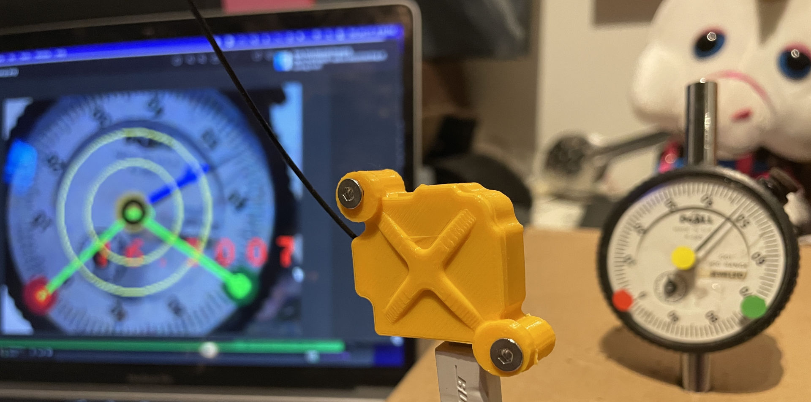
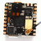
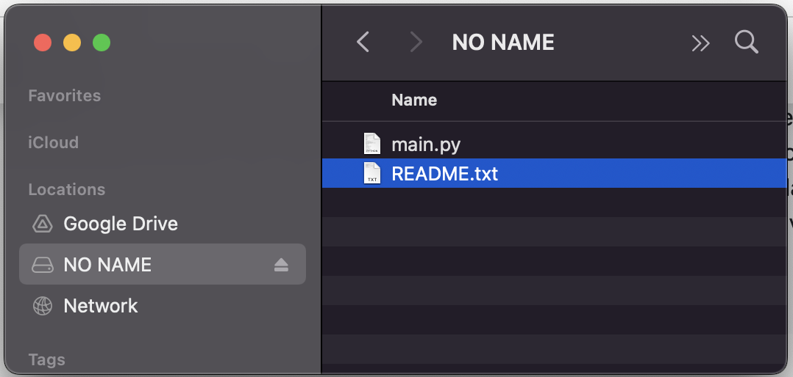
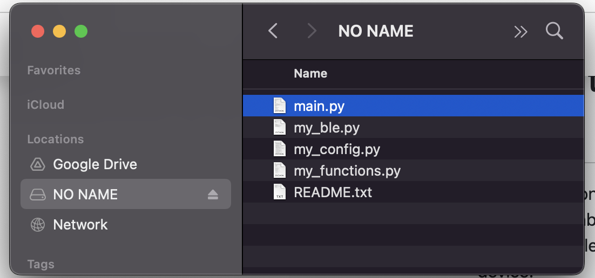
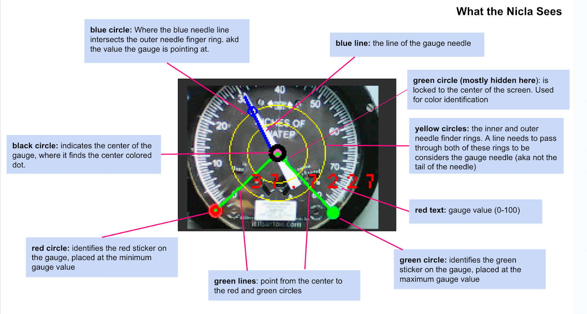

Configure a Nicla Vision Gauge Reader
Our step-by-step guide to create a wireless gauge reader using OpenMV on the Nicla Vision.
The TL;DR (Too Long; Didn't Read)
- What's the Expected Result?
- You'll have a fleet of Nicla Vision devices capturing readings from a variety of different types of analog guages.
- What’s the alternative?
- Live camera feeds for all gauges, or more robust computer-vision solutions are possible, but this implementation meets the goals of being low-power, easy to set up, and robust enough to work in a variety of environments.
- Is this for me?
- If you have analog gauges that need to be monitored for long periods of time without recharging, this might be the right solution for you.
Prerequisites
A Nicla Vision configured to run OpenMV
-
Buy a Nicla Vision* from the Arduino Store
Support the ongoing development of the Arduino open source hardware ecosystem!* a standard USB A to micro-B cable is required—but not included!
- 
-
Nicla Vision Development Guide
Our step-by-step guide to set up the Nicla Vision for programming with OpenMV.
Getting the Nicla Gauge Reader Code Step 1 of 8
- Why is this code on GitHub?
- We benefit from open source software, so we believe in providing free and open access to our software & technologies as well.

Download or clone the codebase from:
https://github.com/reelyactive/nicla-vision-gauge-readerSetting up files on the Nicla Vision Step 2 of 8
- How do I copy files onto the Nicla?
- The nicla vision should appear as an attached storage device. You will probably see a main.py file already in it's filesystem. You can put files into the Nicla simply by copying them to this device.
- Why do I need to do this?
- While you can run code in OpenMV directly on the Nicla, the nicla will look for any referenced files (like configuration files, functions, etc) on the Nicla itself.
- Why are there extra files?
- To keep the code readable, and to make configuration easier, the software is broken up into a few files.
- What’s the ra_config.py file?
- The file ra_config.py should be the only file you have to edit. The config file is divided into sections and is heavily commented to explain what all the variables are for. Upcoming steps will explain how and why to edit some of the configuration variables.
Before Copying Files:
Copy the following files to the nicla vision
Right into the root folder of the Nicla attached storage device.
- nicla-vision-gauge-reader/nicla/ra_functions.py
- nicla-vision-gauge-reader/nicla/ra_config.py
- nicla-vision-gauge-reader/nicla/ra_ble.py
After Copying Files:
Running the Code Step 3 of 8
Beginning your adventure in gauge-reading.
- Prerequisites?
- The instructions below assume you've gone through the Nicla Vision Development Guide, to cover the basics of Nicla setup programming with OpenMV.
- How do I point the Nicla at a gauge?
- In a testing environment, you'll want to ensure that the position of the nicla is stable, but adjustable, and convenient for attaching to a computer while pointed at the gauge. Because the Nicla is so light, it's easiest to stablize the end of the usb cable that the Nicla plugs into, rather than the Nicla itself. A Desktop tripod can be a good solution.
Step-by-step
- Load main-gauge1.py in OpenMV
- Connect your Nicla
- Open the Serial Terminal
- Make sure the Frame Buffer is visible
- Click the start Icon
- Point the nicla camera at a gauge
- Adjust the position of the nicla until the framebuffer shows that it is capturing readings from the gauge. You want it to looks something like this:
What the graphics on the gauge mean:

What are the flashing lights on the Nicla?
Every time the nicla captures a gauge value and sends it via Bluetooth, it flashes a green light. This will help you position the nicla when it’s not connected to a computer.Setting up a Gauge for Reading Step 4 of 8
aka "Fiddling with it until it works".
- Why is this hard?
- This software has to deal with two real-world constraints: lighting and installation complexity.
- What do you mean "installation complexity?"
- In an ideal scenario, the Nicla camera is pointed directly at the center of the gauge, the needle is cleary identifiable, and the min and max needle values are in a consistent position. However, vibrations or installation requirements might make this difficult to achieve. So we need anohter way to identify key points in the image.
- Why is lighting complicated?
- Our solution for "installation complexity" is to use colored dots that the Nicla can easily find. However, different lighting conditions might make the Nicla see different colors on the dots. So we need to calibrate the color recognition algorithm is we use this approach.
There are two methods the Nicla can use for determining the position of the gauge needle:
Absolute Positioning
With this method, it is assumed that the center of the needle, and the min and max values of the needle will always be in the same place. These positions are set in the configuration file with the variables:
"use_color_dots" : False, # set this to FALSE to use absolute positioning
"radian_point_min": .25 * math.pi, # the point in radians of the min gauge value
"radian_point_max": 1.75 * math.pi, # the point in radians of the max gauge value
# coordinates of the center of the gauge. This will usually be half of the width and height
"center_x" : 80,
"center_y" : 60,
Colored Dots
Place small colored dots at the min and max gauge positions, and on the center of the gauge. Then configure the color thresholds to identify those colors.
Color Dot Calibration Step 5 of 8
Adjusting the algorithm to match lighting conditions.
- Why do we need to do this, isn’t red just red?
- Depending on lighting, the gauge color, and other conditions, a red dot might not look exactly the same to the Nicla. So we need to do some testing to get the colors to register accurately.
- What’s LAB?
- LAB is another way of defining colors, like RGB, HSL, CMYK, etc. It stands for: L*: Lightness, a*: Red/Green Value, b*: Blue/Yellow Value. It’s what the color detection algorithm uses to identify colors.
- What’s a threshhold?
- The color detection algorithm lets you define a range of values for L, A, and B that we want to single out for detection. In our situation, we may want to define thresholds for each of the colored dots we’re using in our setup.
Run the code Part 1
Make sure the serial terminal is on.
Make sure that the value for color_calibration_on in ra_config.py is set to True.
Start the code running when the nicla is pointed at the gauge in the intended setup. It's important to START it with the nicla in the right place, because the camera calibrates itself to its starting conditions
Point at the color Part 2
Point the small green circle in the center of the Frame Buffer view at the colored dot you want to match. Here it's pointed at the red dot:
Grab the color Part 3
Take note of the 3-value array being output in the Serial Terminal
This is the LAB value of the pixel in the center of the image
Create a Range Part 4
Create a RANGE array, with values about +/- 10 from the given value, so eg
(52, -1, 13) becomes (42, 62, -9,11, 3, 23 )
NOTE that the first value is LIGHTNESS, so you could try a wider range on that.
Update the Config Part 5
Plug this new range array into the ra_config.py, following the instructions there. Make sure you are editing the ra_config.py on the device itself, but keep an updated version backed up on your computer as well.
1. Create a new named threshold in the color_thresholds dictionary, eg
"color_thresholds" : {
"yellow" : (50, 80, -5, 10, 25, 50), # yellow_thresholds (206, 174, 90)-> Lab(72.691%, 3.691%, 37.566%)
# Yellow Dot is for the CENTER.
"room4_yellow" : (45, 75, -15, 5, 15, 45), # yellow_thresholds (206, 174, 90)-> Lab(72.691%, 3.691%, 37.566%)
# The yellow dot in room 4 looks a little different
},
2. change the value of one of the three variables in the config that indicate the threshold name for min_color, max_color, and gauge_center, eg:
"min_color": "red", # the color of the dot at the MINIMUM value of the gauge
"max_color" : "green",# the color of the dot at the MAXIMUM value of the gauge
"center_color" : "room4_yellow", # the color of the dot at the CENTER of the gauge
Try it out! Part 6
Run the code again and see if it works!
Observing the Bluetooth Values Step 6 of 8
- What are some good BLE scanning tools?
- nRF Connect for iOS or Android is a great tool for finding BLE devices and inspecting the data they are sending out.
The Gauge values are sent from the Nicla as Hex values in the range 0-FFFF (65535), which can be divided by 65535 to get the percentage (0-100) of the gauge’s maximum value.
Observe in Pareto Anywhere, or from any Bluetooth Low Energy scanning mobile app, a device named MPY NIMBLE>. The value is advertised as UUID 2AF9
In nrfConnect it will look like this:
Running the Nicla Detached Step 7 of 8
Time to let the little guy run on its own.
- How does the Nicla know what code to run?
- When the Nicla starts up, it automatically looks for a file named main.py on the device itself, and runs it.
Copy the file Part 1
- Copy nicla-vision-gauge-reader/nicla/main-gauge1.py to the Nicla renaming it to main.py
- Unplug and re-plug the Nicla, or press the reset button on the Nicla
Running in Low-Power Mode Step 8 of 8
Sipping battery power like a good bourbon.
- What’s low-power mode?
- In low-power mode, the Nicla spends most of it’s time “asleep,” only waking up briefly to do its job, then pulling the covers over its head and hitting snooze until it’s time to do it again. This way it only consumes a tiny bit of power.
Configuring Low-Power Mode Part 1
Set the following configuration variables:
"sleepmode" : True, # if true, sleep in between sending data (set to false for debugging)
"sleep_interval" : 10000, # how long to sleep, in ms, between jobs
"sends_per_wake" : 10, # how many data sends per wake session
Each time the device wakes up, it will do several reads of the gauge and send out the values via bluetooth. The number of reads it does each time it wakes up is defined in “sends_per_wake.” The amount of time it sleeps is defined in “sleep_interval”
Note: When the device goes to sleep, it also disconnects from your computer if it’s connected, meaning you can’t copy files or update the ra_config.py file.
To Turn off Low-Power Mode:
Edit ra_config.py on your computer
"sleepmode" : False,
When you re-connect the Nicla to your computer , you have a brief window where the device is available to copy files to, before sleeping again. During this window, try to copy ra_config.py to it. This might result in ra_config.py on the nicla becoming corrupted, in which case main.py won’t run, meaning it won’t go back to sleep, it will stay attached to your computer, and you can now upload your new ra_config.py files.

Tutorial prepared with ♥ by donundeen.
You can reelyActive's open source efforts directly by contributing code & docs, collectively by sharing across your network, and commercially through our packages. We invite you to sponsor OpenMV too!Where to next?
Continue exploring our open architecture and all its applications.
-

-
Directory of Devices
Browse all device configuration tutorials and development guides.
-

-
reelyActive Developers
Browse all developer documentation and tutorials.
-

-
reelyActive
Together, let's make sense of things.